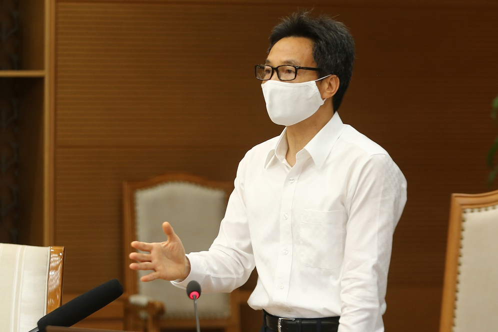

|

"Khả năng còn nguồn dịch khác trong cộng đồng ngoài 4 nguồn hiện tại"
(Dân trí) - Phó Thủ tướng Vũ Đức Đam điểm lại diễn biến 4 nguồn dịch ở Đà Nẵng, Yên Bái, Hải Dương, Bệnh viện K, Bệnh viện Nhiệt đới và lưu ý khả năng còn những nguồn dịch khác trong cộng đồng.
- Nơi nào đang phải cách ly xã hội, giãn cách xã hội vì Covid-19?
- Hà Nội: Những "điểm nóng" Covid-19 đang được phong tỏa, cách ly y tế
|
TIN TỨC SỰ KIỆN
- a Bắc Ninh: 101 ca dương tính, nhân viên y tế kiệt sức ngủ gục tại chỗ
- 4 nhân viên Bệnh viện Chợ Rẫy phản ứng nặng khi chích ngừa Covid-19
- Hưng Yên: 2 ca dương tính với SARS-CoV-2 là mẹ con
- Tuyển thủ Campuchia: "Tuyển Việt Nam thua xa Thái Lan, đừng mơ World Cup"
- Vợ Bill Gates phá vỡ im lặng sau thông báo ly hôn
- Cô giáo mầm non thu cả chục triệu đồng/tháng nhờ "nghề phụ" mùa Covid-19
- Hà Nội: Không tụ tập quá 10 người, hàng ăn phải giãn cách 2m
- Vĩnh Phúc: Khởi tố 2 vụ án liên quan đến bar Sunny
- Người dân quay cuồng với nắng nóng đầu hè, mặc 3 lớp áo vẫn bỏng rát
- Ca Covid-19 đến bệnh viện Bạch Mai khám bệnh, 19 y bác sĩ phải cách ly
|